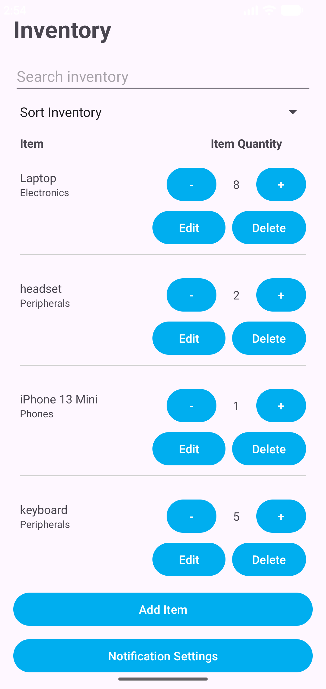
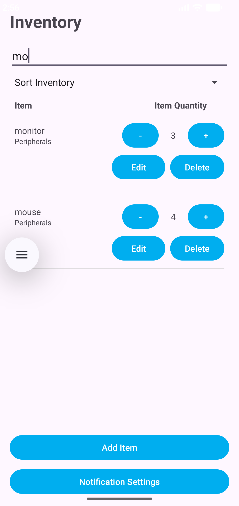
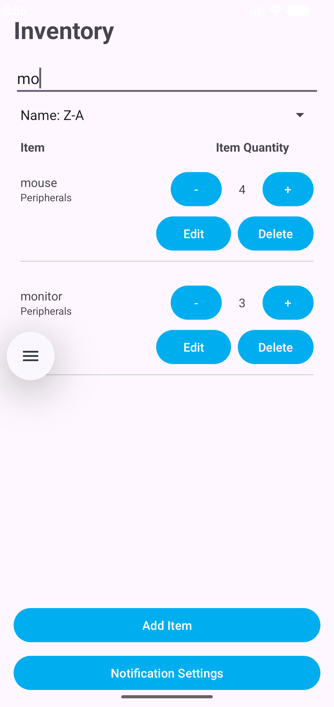

Artifact Overview
The artifact selected for the Algorithms and Data Structures category is an Android inventory management application originally developed in CS 360: Mobile Architecture and Programming at Southern New Hampshire University.
The application was developed in Java using Android Studio and uses SQLite for local data storage. Inventory records are retrieved from the database and displayed to the user through a RecyclerView.
I selected this artifact because its inventory data provides an opportunity to apply algorithms and data structures to improve how users locate and organize information within the application.
Enhancement
The primary enhancement was the addition of search and sorting functionality to the inventory display. Users can search for inventory records by item name and sort the displayed inventory to make specific records easier to locate and evaluate.
Search functionality filters the inventory by comparing item names with the user's search term and constructing a set of matching results for display. Sorting logic organizes the displayed records while preserving the current filtered results.
Separating the sorting logic from the complete inventory dataset allows searching and sorting to work together. A user can narrow the inventory through a search and then change the sort order without losing the filtered results.
The enhancement also provided an opportunity to evaluate algorithm selection in relation to the size and characteristics of the dataset. Linear searching is appropriate for the application's relatively small inventory, while larger datasets could justify alternative approaches with different performance characteristics.
Skills Demonstrated
Search Algorithms
Implemented inventory searching by evaluating stored records against user-provided search criteria.
Sorting Algorithms
Added sorting functionality that organizes displayed inventory records while maintaining the current filtered dataset.
Data Structures
Used inventory collections to manage complete and filtered datasets during search and sorting operations.
Algorithm Analysis
Evaluated algorithm choices based on dataset size, efficiency, application requirements, and potential scalability.
Application State
Maintained filtered results while allowing users to change sorting options without resetting their search.
Java & Android
Integrated new algorithmic functionality into an existing Java-based Android inventory application.
Automated Testing
Added four instrumented tests covering search filtering, alphabetical sorting, quantity sorting, and combined search-and-sort behavior. The complete test suite passes all nine tests.
Course Outcomes
Course Outcome 3
This enhancement demonstrates the design and evaluation of a computing solution using algorithmic principles. Search and sorting techniques were selected based on the needs and size of the inventory dataset while considering the trade-offs involved in alternative approaches.
Course Outcome 4
This enhancement demonstrates the use of Java, Android development tools, data structures, and algorithmic techniques to extend an existing application with functionality that improves how users locate and organize inventory information.
Development Reflection
Developing the search and sorting enhancement strengthened my understanding of how algorithm selection affects both application behavior and usability. Search functionality required working with the inventory collection to identify matching records, while sorting required organizing the currently displayed dataset without interfering with the user's active search.
An important design consideration was ensuring that search and sorting behaved as complementary features rather than separate operations. Keeping the sorting logic separate allowed filtered results to remain filtered when the user selected a different sorting option.
The enhancement also reinforced the importance of selecting algorithms based on the characteristics of the data being processed. A straightforward linear search is suitable for the relatively small inventory used by this application. For much larger datasets, alternative search techniques and data structures could provide improved performance and would need to be evaluated against their additional complexity.
Automated testing was also expanded to verify the new functionality. Four instrumented tests were added for search filtering, alphabetical sorting, quantity sorting, and combined search-and-sort behavior. The complete instrumented test suite passes all nine tests, including tests retained from the previous enhancement, helping confirm that the new functionality did not introduce regressions.
Artifact Materials
The following materials document the completed Algorithms and Data Structures enhancement.
Application Screenshots
The screenshots below demonstrate the completed inventory search and sorting functionality.


